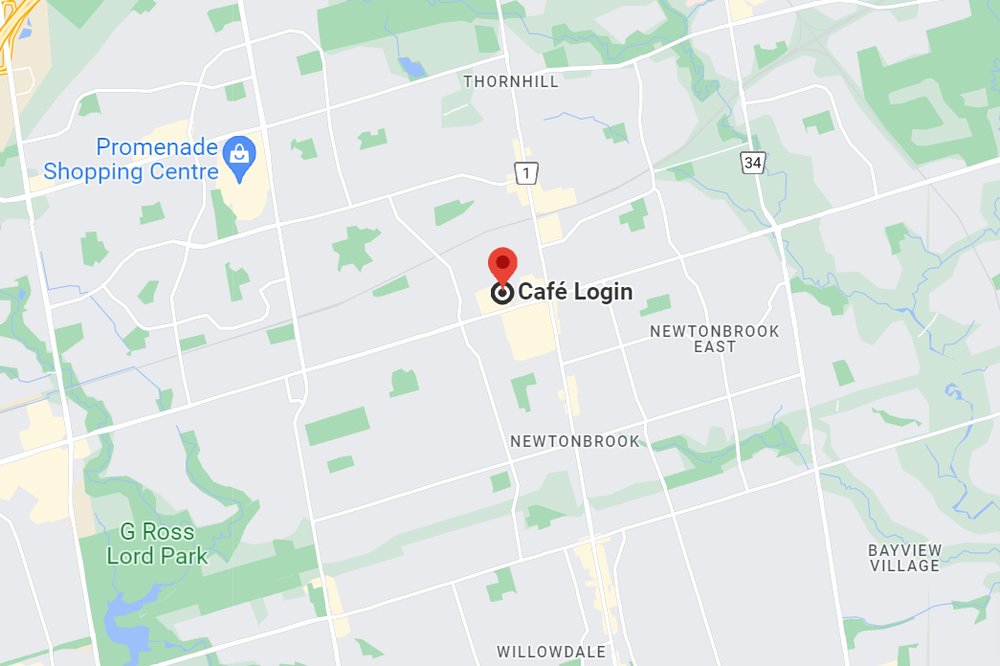

WELCOME TO OUR MERAKI

As I stepped into the book cafe, a serene ambiance washed over me like a gentle breeze on a summer's eve. Soft melodies from a grand piano filled the air, their delicate notes floating amidst the comforting hum of conversation. Sunlight cascaded through the large windows, casting a warm glow upon the walls adorned with shelves upon shelves of books, like colorful dreams waiting to be explored. The aroma of freshly brewed coffee mingled with the sweet scent of pages, creating an intoxicating blend that awakened my senses. Nestled in cozy nooks, patrons were immersed in their chosen realms, their faces illuminated by the soft glow of reading lamps. Each table was adorned with delicate flowers, adding a touch of nature's beauty to this literary sanctuary. The air was thick with inspiration, as whispers of imagination swirled and danced with the rising steam from coffee mugs. Time stood still, and in this haven of stories, I lost myself, savoring every word, every sip, and every magical moment spent within the enchanting embrace of the book cafe.
In the embrace of our book cafe, an aesthetic tapestry of literary enchantment unfolds. The shelves, adorned with meticulously curated volumes, exude a timeless charm, their spines like strokes of a painter's brush. Soft, dappled sunlight cascades through tall windows, casting a warm glow upon cozy reading corners adorned with plush velvet armchairs and whimsical cushions. The air is alive with the delicate fragrance of aged paper and freshly ground coffee, intertwining to create a symphony for the senses. The gentle rustling of pages and hushed whispers of book lovers harmonize with the soothing melodies of instrumental music, composing a melodious backdrop for literary exploration. Here, amidst the artistry of words and the allure of vintage aesthetics, time surrenders its grasp, granting respite to wandering souls seeking solace in the intoxicating dance of prose and poetry.
.jpg)

MERAKI BOOK-CAFE-
MERAKI.CANADA
+923116785430
www.meraki-book-cafe.com
MONDAY-FRIDAY 9am-4pm
SATURDAY,SUNDAY 11am-4pm
FOLLOW US:
FACEBOOK: @THE MERAKI-BookCafe-
INSTAGRAM: @meraki-bookcafe-
TWITTER: @MERAKI-BookCafe-


Copy right 2020-2023 MERAKI-BookCafe- | All rights reserved